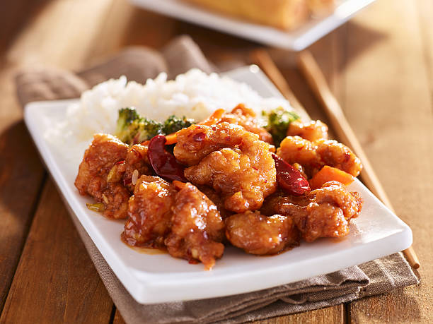

General Tso's Chicken

Description
General Tso's Chicken is a Chinese-American dish of fried chicken pieces that are breaded and tossed in a tangy sauce. The dish is typically served with a bed of steamed rice.
Ingredients
- 2 lb chicken thighs, cut into 1-inch pieces
- 1/2 cup corn starch
- 1/4 cup oil, for frying
- 2 tbsp minced ginger
- 1 tsp red chili flakes
- 4 cloves garlic minced
- 1 tsp sesame seeds, optional for garnish
Sauce
- 6 tbsp rice vinegar
- 6 tbsp soy sauce
- 4 tbsp hoisin sauce
- 1/2 cup water
- 6 tbsp sugar
- 2 tbsp cornstarch
Steps
- Cut chicken into 1-inch cubes. Toss each piece with cornstarch. Set aside.
- In a separate dish, combine all the ingredients for your sauce together.
- Preheat a non-stick skillet with oil. Cook each chicken piece until all the sides are golden brown. Remove the chicken from the pan. Leave about 1 tbsp of oil in the pan for cooking.
- Add the garlic, ginger and pepper flakes. Sautee for about 30 seconds.
- Add the sauce to the skillet and bring it to a simmer then add the chicken and toss to coat. Serve right away!